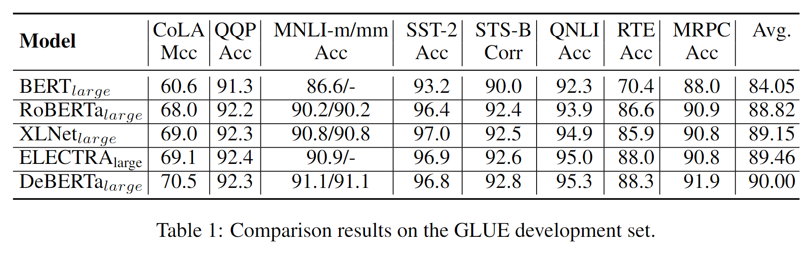
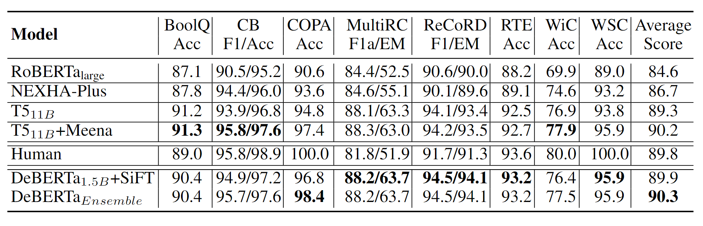

DeBERTa: 注意力解纠缠和解码加强版的 BERT
摘要
DeBERTa 是微软于去年在《DEBERTA: DECODING-ENHANCED BERT WITH DIS-ENTANGLED ATTENTION》中提出的预训练模型， 论文收录于 ICLR 2021 中。DeBERTa (Decoding-enhanced BERT with disentangled attention)， 顾名思义，相较于普通的 BERT，DeBERTa 加强了其解码能力，解耦了注意力。DeBERTa 第一次在 SuperGLEU 基准上超越了人类， 在 MNLI、SQuAD、RACE 数据集上相较于 RoBERTa 也有较大的提升（0.9%-3.6%）。
DeBERTa 的模型和代码开源在 github。 现在 SuperGLEU 上的第一已经是 ST-MoE-32B 了，不过排在 DeBERTa 之前的模型参数量似乎都是 DeBERTa 的数倍， 这说明 DeBERTa 还是很有读一下的必要的。
介绍
DeBERTa 对于 BERT 共两个改进点，注意力解耦与增强掩码解码。具体体现在：
注意力解纠缠。BERT 中，不同类型的 embedding 求和作为最终的表征（例如 token embedding、position embedding）。 DeBERTa 对每个单词使用两个向量进行表示，分别对内容、位置进行编码。单词间的注意力权重由解纠缠矩阵分别根据其内容和相对位置计算。
增强的掩码解码器。DeBETa 也是使用掩码语言模型进行预训练，与 BERT 类似。在这个任务设定下，被掩码词的绝对位置有时是很重要的。 例如 “a new store opened beside the new mall."这句话，如果对"store"和"wall" 进行掩码，两者的上下文、语义都接近，但是句法作用是不同的（例如谁是主语）。 这些细微差距很大程度上与绝对位置相关，因此 DeBERTa 在 softmax 层前合并了绝对位置嵌入。 在该层中，模型基于聚合上下文和绝对位置预测被掩码的单词。
另外，论文还提出了一种新的虚拟对抗训练方法，用于微调 plm 到下游的 NLP 任务。该方法有效地提高了模型的泛化能力。
架构
解耦注意力
对于位置 \(i\) 的 token，论文使用两个向量 \(\{H_i\},\{P_{i|j}\}\) 分别代表它的内容嵌入和与位置 \(j\)token 的相对距离。位置 \(i\) 与位置 \(j\) 的 token 间的注意力分数可以分解为下面四个部分： \[ \begin{aligned} A_{i,j}&=\{H_i,P_{i|j}\}\times\{H_j,P_{j|i}\}^T\\ &=H_iH_i^T+H_iP_{j|i}^T+P_{i|j}H_j^T+P_{i|j}P_{j|i}^T \end{aligned} \] 也就是说，一对 token 间的注意力权重可以用内容到内容、内容到位置、位置到内容、位置到位置四个注意力的解纠缠矩阵进行计算。
传统的相对位置嵌入方法只使用一个单独的嵌入矩阵，计算相对位置偏差，再用于计算注意力分数。这相当于只使用了上述公式中的 “位置到位置” 注意力。论文认为位置到内容也很重要，建模了位置和内容间的交叉关系。此外，由于 DeBERTa 本身使用的就是相对位置嵌入，所以直接将上述公式中的位置到位置注意力部分删除了。
接下来就是使用两套 Query、Key 矩阵，分别将内容、位置嵌入映射到 query、key，然后求解注意力分数了。
掩码解码增强
为了将绝对位置信息融入到 MLM 预测中，DeBERTa 在在解码掩码字时只使用绝对位置作为补充信息，在 Transformer 层中使用相对位置信息。因此，论文称 DeBERTa 的解码组件为增强掩码解码器（Enhanced Mask Decoder，EMD），其结构如下所示，由 n 个共享权重的块堆叠而成。\(H\) 代表前一层 Transformer 输出的隐藏状态，\(I\) 代表解码所须的信息，例如绝对位置嵌入或前一层 EMD 的输出。第一层 EMD 的 \(I\) 是绝对位置嵌入信息，后续层的 \(I\) 是前一层 EMD 的输出。
在实证研究中，论文比较了这两种使用绝对位置的方法，发现 EMD 的效果要好得多。论文推测，BERT 使用的较早的合并绝对位置可能会妨碍模型学习足够的相对位置信息。而且 EMD 的共享参数也没有过多增加模型参数量。
微调
DeBERTa 使用了一种虚拟对抗训练算法，Scale-invariant-Fine-Tuning (SiFT)，是 Miyato 等人 (2018) 中描述的算法的变体。
虚拟对抗训练是一种提高模型泛化能力的正则化方法。通过改进模型对对抗样本的鲁棒性实现。对抗样本是通过对输入进行小的扰动来创建的。在 NLP 中，是在单词嵌入进行扰动，而非原始单词序列。然而，嵌入向量的取值范围在不同的词和模型中是不同的。对于具有数十亿个参数的大型模型，方差会变得更大，导致对抗训练的一些不稳定性。
论文受层标准化启发，提出了 SiFT 算法，通过对归一化的词嵌入应用扰动来提高训练的稳定性。具体来说，将 DeBERTa 微调到下游的 NLP 任务时，SiFT 首先将词嵌入向量归一化为随机向量，然后对归一化后的嵌入向量进行扰动。实验发现，规范化大大提高了微调模型的性能。这种改进在较大的 DeBERTa 模型中更为突出。
实验
论文在数个 NLU 基准上测试了 DeBERTa。
大模型
与 BERT 相同的设定预训练 DeBERTa，区别在于使用的是 BPE 子词模型。预训练使用了 96 个 V100，20 天。下面是 GLEU 榜单的结果。

下面是 MNLI、SQuAD 等基准上的结果。
可以看出 DeBERTa 已经超过了自回归的 XLNET，可见其性能。
小模型
base 模型的设置与 BERT-base 一致，12 层的架构。结果如下，可以看出相较于 XLNET 和 RoBERTa 是有明显改进的。
消融实验
为了验证结果，论文首先重新训练了一个 RoBERTa-base，作为基准。
消融实验主要测试了三种变体：
- -EMD：没有增强掩码解码器，也就是跟 BERT 一样直接 softmax
- -C2P：没有内容 - 位置间的注意力
- -P2C：没有位置 - 内容间的注意力。由于 XLNET 也使用了相对位置偏差，这种设置接近接近于 XLNET+EMD
从表格可以看出，删除 DeBERTa 中的任何一个组件都会导致性能的大幅下降，尤其是在 SQuAD 数据集上。
15 亿
为了测试 DeBERTa 的上限，论文还构建了一个 48 层，共计 15 亿参数的 DeBERTa，首次以单个模型在 SuperGLUE 上超过了人类，集成性能也取得了第一名，具体分数如下。

总结
这篇论文其实回答了一个蛮重要的问题，相信 NLP 新人刚了解 BERT 的时候，或多或少都会对 embedding 直接相加有一些疑问。解纠缠和绝对位置的融合，同时兼顾了绝对位置的句法信息，和相对位置的邻接关系。解纠缠也使得各个 embedding 更为灵活结合。